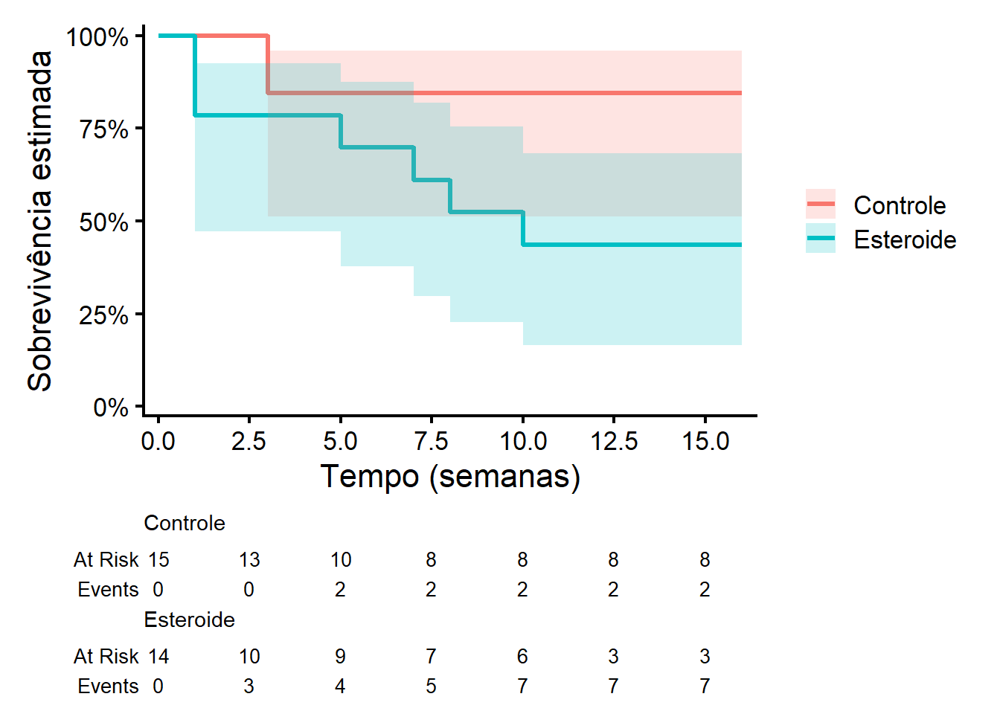
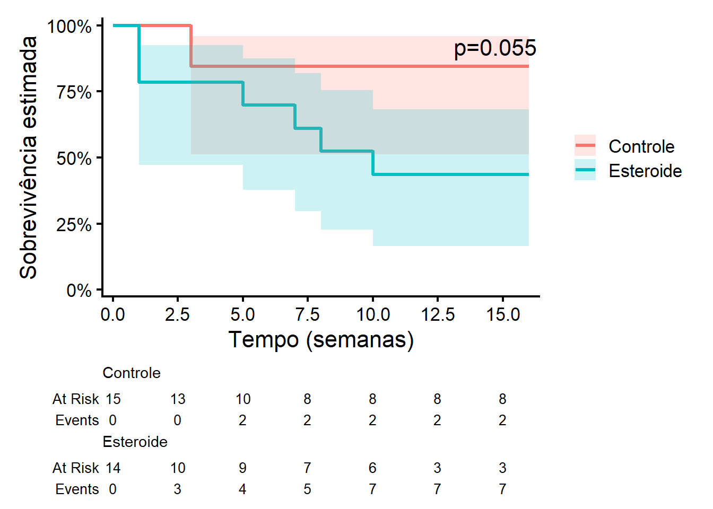
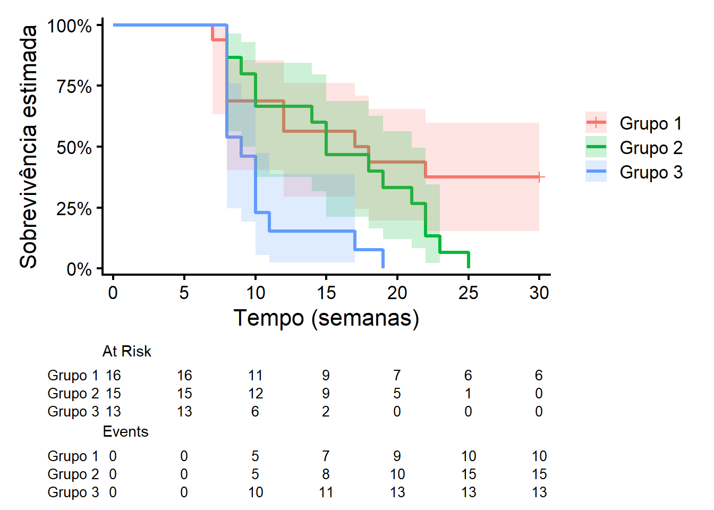
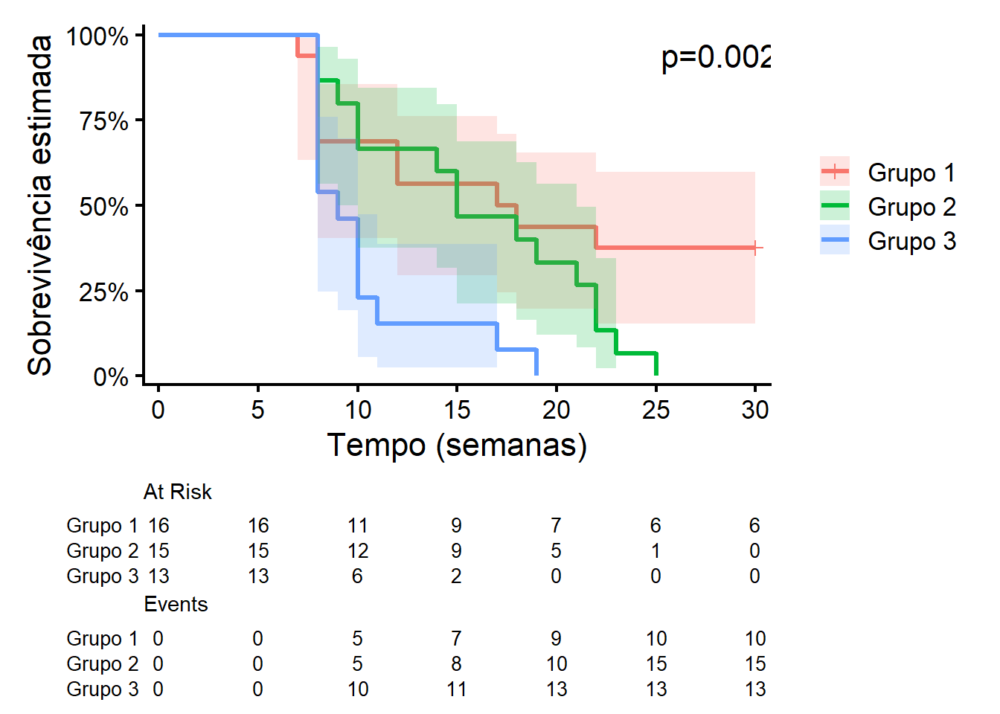

Código
require(dplyr)
require(ggplot2)
require(survival)
require(ggsurvfit)
require(survRM2)
require(coin)Para esta segunda aula prática de Análise de Sobrevivência e Confiabilidade, precisaremos dos seguintes pacotes:
require(dplyr)
require(ggplot2)
require(survival)
require(ggsurvfit)
require(survRM2)
require(coin)Pacote dplyr: Pacote fundamental para a manipulação de dados no R
Pacote ggplot2: Pacote fundamental para construção de gráficos no R
Pacote survival: É o pacote básico para o estudo de Análise de Sobrevivência e Confiabilidade. Contém as principais rotinas, incluindo definição de objetos Surv, curvas Kaplan-Meier, modelos Cox e modelos paramétricos.
Pacote ggsurvfit: O pacote survivaldo R ajusta e traça curvas de sobrevivência (confiabilidade) usando gráficos básicos do R. Os gráficos do pacote ggsurvfit são baseados na estrutura gráfica do pacote ggplot2.
Pacote survRM2: Permite o cálculo do tempo médio restrito de ocorrência do evento de interesse.
Pacote coin: Permite a realização dos testes de Gehan-Breslow, Taronw-Ware e Peto-Peto.
Esta seção é dedicada à descrição das bases de dados utilizadas nesta aula.

Um estudo clínico aleatorizado com o objetivo de investigar o efeito da terapia com esteroide no tratamento de hepatite viral aguda. Vinte e nove pacientes com esta doença foram aleatorizados para receber um placebo ou o tratamento com esteroide. Cada paciente foi acompanhado por 16 semanas ou até a morte (evento de interesse) ou até a perda de acompanhamento. Os dados são retratados a seguir:


Um estudo experimental realizado com camundongos para verificar a eficácia da imunização pela malária foi conduzido no Centro de Pesquisas René Rachou, Fiocruz, MG. Nesse estudo, quarenta e quatro camundongos foram aleatoriamente divididos em três grupos e todos foram infectados pela malária (Plasmodium berguei).
Os camundongos do grupo 1 foram imunizados 30 dias antes da infecção. Além da infecção pela malária, os camundongos dos grupos 1 e 3 foram, também, infectados pela esquistossomose (Schistossoma mansoní). A resposta de interesse nesse estudo foi o tempo decorrido desde a infecção pela malária até a morte do camundongo. Este tempo foi medido em dias e o estudo foi acompanhado por 30 dias. Os tempos de sobrevivência observados para os três grupos encontram-se abaixo. 0 simbolo + indica censura.


O estudo é constituído de pacientes portadores de HIV atendidos entre 1986 e 2000 no Instituto de Pesquisa Clínica Evandro Chagas (Ipec/Fiocruz). Dessa coorte, obteve-se uma amostra de 193 indivíduos que foram diagnosticados como portadores de AIDS (critério CDC 1993) durante o período de acompanhamento. O objetivo é mensurar o tempo, em dias, do diagnóstico até a morte dos pacientes. Para comparação da sobrevivência, vamos ver como o sexo e tipo de tratamento retroviral impactam a sobrevivência do paciente. Para o caso da variável tratamento retroviral, tem-se 0 = nenhum, 1 = mono, 2 = combinada e 3 = potente. Essa base de dados está armazenada no objeto DadosAIDS.csv

Um produtor de requeijão deseja comparar dois tipos de embalagens (A e B) para o seu produto. Ele deseja saber se existe diferença na durabilidade de seu produto com relação às embalagens. O produto dele é vendido à temperatura ambiente e sem conservantes. O evento de interesse é o aparecimento de algum tipo de fungo no produto. Os dados estão apresentados na Tabela abaixo, em que o tempo foi medido em horas. 0 simbolo + indica censura.


Os dados apresentados na Tabela abaixo representam o tempo (em dias) até a morte de pacientes com câncer de ovário tratados na Mayo Clinic. O símbolo + indica censura.


Vinte e oito cães com leishmaniose foram selecionados para comparar quatro diferentes tipos de tratamentos (A, B, C e D) e um grupo controle. O evento de interese foi a morte do animal. Os dados estão apresentados na Tabela abaixo em que o tempo foi medido em meses. O simbolo + indica censura.

Na nossa aula teórica, vimos todos os detalhes técnicos acerca dos seguintes testes de comparação de curvas de sobrevivência/confiabilidade:
Para a aplicação destes testes, vamos utilizar a base de dados de hepatite. Assim, seguem os comandos que carregam esta base:
tempos <- c(1,2,3,3,3,5,5,16,16,16,16,16,16,16,16,1,1,1,1,4,5,7,8,10,10,12,16,16,16)
cens <- c(0,0,1,1,0,0,0,0,0,0,0,0,0,0,0,1,1,1,0,0,1,1,1,1,0,0,0,0,0)
grupos <- c(rep("Controle",15),rep("Esteroide",14))
Dados1 <- data.frame(tempos,cens,grupos)Lembre-se também das curvas de sobrevivência e intervalos de confiança com transformação log-log que vimos na última aula prática:
ekm<- survfit2(data=Dados1,
formula = Surv(tempos,cens)~grupos,
conf.type = "log-log",
conf.int=0.95)
ggsurvfit(ekm, linewidth = 1.2) +
add_confidence_interval() +
add_risktable() +
scale_ggsurvfit() +
labs(
x = "Tempo (semanas)",
y = "Sobrevivência estimada"
) +
theme_classic(base_size = 16)
Os testes a seguir irão testar as seguintes hipóteses:
Para aplicar o teste Log-Rank no R, utilizaremos a função survdiff do pacote survival. Segue o seguinte esquema para a utilização dessa função:
survdiff(Surv(Tempo,Censura)~Grupo, data=Dados)Os componentes dessa função são:
Surv(Tempo, Censura): cria o objeto de sobrevivênciaTempo: tempo até o evento ou censuraCensura: indicador (1 = evento, 0 = censurado)Grupo: variável categórica que define os gruposdata: base de dados utilizadaA função survdiff retorna como saída os seguintes valores:
N
Número de indivíduos em cada grupo.
Observed
Número observado de eventos (ex: óbitos) em cada grupo.
Expected
Número esperado de eventos sob a hipótese nula
(isto é, assumindo que os grupos têm a mesma curva de sobrevivência).
(O - E)^2 / E
Mede a discrepância entre observado e esperado para cada grupo. Contribuição individual aproximada para a estatística do teste.
(O - E)^2 / V
Versão ajustada pela variância (mais precisa). Base para a estatística global do teste Log-Rank.
Chisq
Estatística qui-quadrado do teste Log-Rank
(soma das contribuições dos grupos).
degrees of freedom
Graus de liberdade = número de grupos - 1.
p-value
Indica evidência contra a hipótese nula.
Para aplicar o teste Log-Rank aos dados de hepatite, utilizaremos o seguinte comando:
survdiff(Surv(tempos,cens)~grupos, data=Dados1)Call:
survdiff(formula = Surv(tempos, cens) ~ grupos, data = Dados1)
N Observed Expected (O-E)^2/E (O-E)^2/V
grupos=Controle 15 2 4.81 1.64 3.67
grupos=Esteroide 14 7 4.19 1.89 3.67
Chisq= 3.7 on 1 degrees of freedom, p= 0.06 O grupo Esteroide apresentou mais eventos observados do que o esperado,
enquanto o grupo Controle apresentou menos do que o esperado.
Isso sugere pior sobrevivência no grupo Esteroide.
A estatística do teste foi Chisq = 3.7 com 1 grau de liberdade.
O valor-p (p = 0.06) é ligeiramente acima de 0.05:
→ Não há evidência estatisticamente significativa de diferença entre os grupos,
embora exista uma tendência de diferença.
É possível acrescentar o valor-p do teste Log-Rank no gráfico das curvas de sobrevivência acrescentando o comando add_pvalue("annotation"):
ggsurvfit(ekm, linewidth = 1.2) +
add_confidence_interval() +
add_risktable() +
scale_ggsurvfit() +
add_pvalue("annotation")+
labs(
x = "Tempo (semanas)",
y = "Sobrevivência estimada"
) +
theme_classic(base_size = 16)
Como visto em sala, o teste Log-Rank coloca o mesmo peso nos tempos de ocorrência do evento de interesse no cálculo da estatistica de teste. Entretanto, em algumas situações, pode ser de interesse colocar um peso diferente. Principalmente nos tempos iniciais (momento que possuímos mais observações).
Para a realização dos testes ponderados de comparação de curvas de sobrevivência/confiabilidade no R, utilizaremos a função logrank_test do pacote coin. Essa função tem a seguinte estrutura:
logrank_test(Surv(Tempo,Censura)~factor(Grupo),type="Teste")Os componentes dessa função são:
Surv(Tempo, Censura): cria o objeto de sobrevivênciaTempo: tempo até o evento ou censuraCensura: indicador (1 = evento, 0 = censurado)Grupo: variável categórica que define os grupos e deve ser precedida da função factor.type: tipo do teste: “Gehan-Breslow”, “Tarone-Ware” e “Peto-Peto”.A função logrank_test retorna como saída os seguintes valores:
Z =p-value =Para aplicar o teste de Gehan-Breslow aos dados de hepatite, utilize os seguintes comandos:
logrank_test(Surv(tempos,cens)~factor(grupos),type="Gehan-Breslow")
Asymptotic Two-Sample Gehan-Breslow Test
data: Surv(tempos, cens) by factor(grupos) (Controle, Esteroide)
Z = 1.7897, p-value = 0.07349
alternative hypothesis: true theta is not equal to 1Com um valor-p de 0,073 não rejeita-se a hipótese nula e há evidências de que as curvas de sobrevivência são iguais.
É possível acrescentar o valor-p do teste Gehan-Breslow no gráfico das curvas de sobrevivência acrescentando o comando add_pvalue("p=0.073"):
ggsurvfit(ekm, linewidth = 1.2) +
add_confidence_interval() +
add_risktable() +
scale_ggsurvfit() +
add_pvalue(caption = "p=0.073",
location = "annotation")+
labs(
x = "Tempo (semanas)",
y = "Sobrevivência estimada"
) +
theme_classic(base_size = 16)Para aplicar o teste de Tarone-Ware aos dados de hepatite, utilize os seguintes comandos:
logrank_test(Surv(tempos,cens)~factor(grupos),type="Tarone-Ware")
Asymptotic Two-Sample Tarone-Ware Test
data: Surv(tempos, cens) by factor(grupos) (Controle, Esteroide)
Z = 1.859, p-value = 0.06303
alternative hypothesis: true theta is not equal to 1Com um valor-p de 0,063 não rejeita-se a hipótese nula e há evidências de que as curvas de sobrevivência são iguais.
É possível acrescentar o valor-p do teste Tarone-Ware no gráfico das curvas de sobrevivência acrescentando o comando add_pvalue("p=0.063"):
ggsurvfit(ekm, linewidth = 1.2) +
add_confidence_interval() +
add_risktable() +
scale_ggsurvfit() +
add_pvalue(caption = "p=0.073",
location = "annotation")+
labs(
x = "Tempo (semanas)",
y = "Sobrevivência estimada"
) +
theme_classic(base_size = 16)
Para aplicar o teste de Peto-Peto aos dados de hepatite, utilize os seguintes comandos:
logrank_test(Surv(tempos,cens)~factor(grupos),type="Peto-Peto")
Asymptotic Two-Sample Peto-Peto Test
data: Surv(tempos, cens) by factor(grupos) (Controle, Esteroide)
Z = 1.8571, p-value = 0.06329
alternative hypothesis: true theta is not equal to 1Com um valor-p de 0,063 não rejeita-se a hipótese nula e há evidências de que as curvas de sobrevivência são iguais.
É possível acrescentar o valor-p do teste Peto-Peto no gráfico das curvas de sobrevivência acrescentando o comando add_pvalue("p=0.063"):
ggsurvfit(ekm, linewidth = 1.2) +
add_confidence_interval() +
add_risktable() +
scale_ggsurvfit() +
add_pvalue(caption = "p=0.063",
location = "annotation")+
labs(
x = "Tempo (semanas)",
y = "Sobrevivência estimada"
) +
theme_classic(base_size = 16)Foram aplicados diferentes testes para comparação das curvas de sobrevivência entre os grupos Controle e Esteroide, incluindo o teste log-rank e suas versões ponderadas, como Gehan-Breslow, Tarone-Ware e Peto-Peto. Esses testes diferem essencialmente quanto ao peso atribuído aos tempos de falha, sendo o log-rank sensível a diferenças ao longo de todo o período de acompanhamento, enquanto os demais dão maior ênfase aos tempos iniciais.
De modo geral, os resultados foram consistentes entre si. O teste log-rank apresentou um valor-p próximo ao nível de significância usual (p ≈ 0,05), enquanto os testes ponderados produziram valores-p ligeiramente maiores, situando-se entre aproximadamente 0,06 e 0,07.
Essa convergência de resultados sugere a presença de um possível efeito de diferença entre os grupos, porém com evidência estatística fraca ou limítrofe. O fato de a significância não ser confirmada de maneira consistente entre os diferentes testes indica que a conclusão pode ser sensível à escolha do método empregado.
Do ponto de vista prático, não há evidências robustas de que o uso de esteroide altere significativamente a sobrevivência dos indivíduos, seja nos tempos iniciais (onde os testes ponderados seriam mais sensíveis), seja ao longo de todo o período de acompanhamento. Assim, os resultados apontam apenas para uma tendência de diferença, devendo ser interpretados com cautela.
Para motivar a ocorrência de comparações múltiplas, vamos considerar os dados de malária. Seguem os comandos que carregam esses dados e fazem as curvas de sobrevivência:
tempos<-c(7,8,8,8,8,12,12,17,18,22,30,30,30,30,30,30,8,8,9,10,10,14,
15,15,18,19,21,22,22,23,25,8,8,8,8,8,8,9,10,10,10,11,17,19)
cens<-c(rep(1,10), rep(0,6),rep(1,15),rep(1,13))
grupos<-c(rep("Grupo 1",16), rep("Grupo 2",15), rep("Grupo 3",13))
Dados2<-data.frame(tempos,cens,grupos)
ekm2<- survfit2(data=Dados2,
formula = Surv(tempos,cens)~grupos,
conf.type = "log-log",
conf.int=0.95)
# gráfico com marcas de censura
ggsurvfit(ekm2, linewidth = 1.2) +
add_risktable() +
add_confidence_interval()+
add_censor_mark(size = 2, alpha = 1)+
scale_ggsurvfit() +
labs(
x = "Tempo (semanas)",
y = "Sobrevivência estimada"
) +
theme_classic(base_size = 16) 
Conforme visto em sala…..
survdiff(Surv(tempos,cens)~grupos, data = Dados2)Call:
survdiff(formula = Surv(tempos, cens) ~ grupos, data = Dados2)
N Observed Expected (O-E)^2/E (O-E)^2/V
grupos=Grupo 1 16 10 17.00 2.8816 6.4111
grupos=Grupo 2 15 15 14.51 0.0167 0.0317
grupos=Grupo 3 13 13 6.49 6.5190 10.4447
Chisq= 12.6 on 2 degrees of freedom, p= 0.002 ggsurvfit(ekm2, linewidth = 1.2) +
add_risktable() +
add_confidence_interval()+
add_pvalue("annotation")+
add_censor_mark(size = 2, alpha = 1)+
scale_ggsurvfit() +
labs(
x = "Tempo (semanas)",
y = "Sobrevivência estimada"
) +
theme_classic(base_size = 16) 
grupos_unicos <- unique(Dados2$grupos)
pares <- combn(grupos_unicos, 2, simplify = FALSE)
resultados <- lapply(pares, function(par) {
dados_sub <- Dados2 %>%
filter(grupos %in% par)
teste <- survdiff(Surv(tempos, cens) ~ grupos, data = dados_sub)
chisq <- teste$chisq
pvalor <- teste$pvalue
data.frame(
grupo1 = par[1],
grupo2 = par[2],
chisq = chisq,
pvalor = pvalor
)
})
resultados <- do.call(rbind, resultados)
resultados grupo1 grupo2 chisq pvalor
1 Grupo 1 Grupo 2 2.526958 0.111915801
2 Grupo 1 Grupo 3 7.863479 0.005044323
3 Grupo 2 Grupo 3 7.980423 0.004728588resultados$p_bonferroni <- p.adjust(resultados$pvalor, method = "bonferroni")
resultados$p_holm <- p.adjust(resultados$pvalor, method = "holm")
resultados grupo1 grupo2 chisq pvalor p_bonferroni p_holm
1 Grupo 1 Grupo 2 2.526958 0.111915801 0.33574740 0.11191580
2 Grupo 1 Grupo 3 7.863479 0.005044323 0.01513297 0.01418576
3 Grupo 2 Grupo 3 7.980423 0.004728588 0.01418576 0.01418576